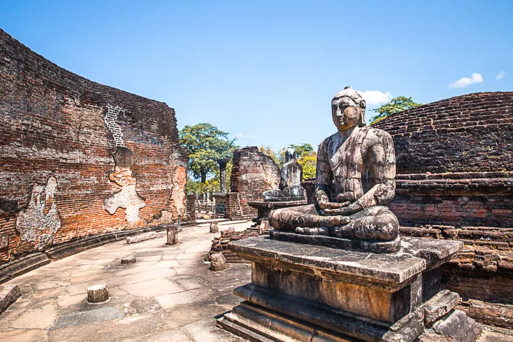

Polonnaruwa

Polonnaruwa, the second ancient capital of Sri Lanka, is one of the most historically significant and culturally rich cities on the island. Recognized as a UNESCO World Heritage Site, Polonnaruwa is famous for its well-preserved ruins, architectural brilliance, and unique insight into the country’s medieval history. It served as the capital during the reign of King Vijayabahu I in the 11th century after he defeated the Chola invaders. Later, under King Parakramabahu the Great, Polonnaruwa reached its golden age, becoming a center of political power, trade, religion, and advanced irrigation systems that supported agriculture. Even today, Polonnaruwa is admired for its ancient ruins, massive reservoirs, and monuments that reflect both Buddhist and Hindu influences, making it a treasure for historians, archaeologists, and travelers alike.
One of the main attractions in Polonnaruwa is the Gal Vihara, a remarkable group of four massive Buddha statues carved out of a single granite rock. These statues, which include a seated, standing, and reclining Buddha, are considered masterpieces of Sinhalese stone carving and reflect the spiritual devotion of the era. Another highlight is the Parakrama Samudra, a vast artificial reservoir built by King Parakramabahu. This tank, often described as an inland sea, is a symbol of the king’s vision and engineering skills, ensuring water for farming and daily life. The reservoir is not only a functional marvel but also a scenic spot that adds to the beauty of Polonnaruwa.
The Royal Palace of King Parakramabahu is another significant site, once consisting of thousands of rooms and several stories. Though only ruins remain today, they still convey the grandeur and strength of the ancient kingdom. Nearby is the Council Chamber, where important state matters were discussed. The Sacred Quadrangle is also a must-visit, featuring temples and shrines, including the Vatadage, which is a circular relic house built to protect the sacred tooth relic of the Buddha. This site is admired for its unique design, stone carvings, and historical importance.
Polonnaruwa is also home to several Hindu temples, built during the Chola period, which reflect the cultural diversity of the time. The Siva Devales stand as reminders of Hindu influence in the region, showcasing South Indian architectural styles. In addition, statues like the Parakramabahu Statue, believed to depict either King Parakramabahu or a sage, add further intrigue to the city’s heritage.
Apart from ruins and monuments, Polonnaruwa is surrounded by beautiful landscapes and wildlife. The area is rich in birdlife and close to Minneriya and Kaudulla National Parks, where travelers can witness large gatherings of elephants. Cycling is a popular way to explore Polonnaruwa, as the ruins are spread across a vast area, and biking allows visitors to appreciate the sites at a relaxed pace.
Interesting Places